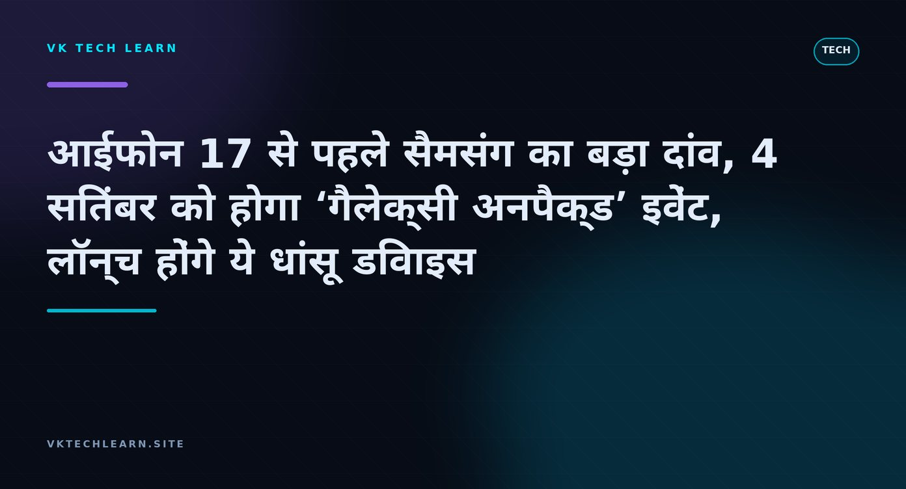

आईफोन 17 से पहले सैमसंग का बड़ा दांव, 4 सितंबर को होगा ‘गैलेक्सी अनपैक्ड’ इवेंट, लॉन्च होंगे ये धांसू डिवाइस
iPhone 17 से पहले सैमसंग का बड़ा दांव: 4 सितंबर को होगा ‘Galaxy Unpacked’ इवेंट, लॉन्च होंगे नए डिवाइस
Apple के iPhone 17 सीरीज लॉन्च से कुछ दिन पहले ही Samsung ने अपने बहुप्रतीक्षित ‘Galaxy Unpacked Event 2025’ की घोषणा कर दी है। यह इवेंट 4 सितंबर, 2025 को होगा, जो सीधे तौर पर Apple को टक्कर देने की रणनीति का हिस्सा माना जा रहा है।

इवेंट में क्या लॉन्च होगा?
सैमसंग ने अपने इनवाइट में संकेत दिया है कि इस इवेंट में प्रीमियम AI टैबलेट और Galaxy S25 फैमिली के नए प्रोडक्ट्स पेश किए जाएंगे। रिपोर्ट्स के मुताबिक कुछ मुख्य डिवाइस होंगे:
Galaxy S25 FE
- 6.7 इंच AMOLED डिस्प्ले, 120Hz रिफ्रेश रेट
- Exynos 2400 प्रोसेसर
- 4,900mAh बैटरी और 45W फास्ट चार्जिंग
- ट्रिपल कैमरा सेटअप, जिसमें 50MP का मुख्य कैमरा
Galaxy Tab S11 Series
- दो मॉडल: Galaxy Tab S11 और Tab S11 Ultra
- 11-इंच और 14.6-इंच AMOLED डिस्प्ले, 120Hz रिफ्रेश रेट
- MediaTek Dimensity 9400+ चिपसेट
- 1TB तक स्टोरेज का विकल्प
क्यों है यह इवेंट खास?
यह इवेंट Apple iPhone 17 Launch (9 सितंबर 2025) से ठीक पहले होने वाला है। Samsung इस मौके पर अपने AI फीचर्स और प्रीमियम टैबलेट्स पेश करके मार्केट में अपनी पकड़ मजबूत करना चाहता है।
लाइव स्ट्रीम कब और कहाँ देखें?
Samsung Galaxy Unpacked Event 2025 का लाइव स्ट्रीम 4 सितंबर, 2025 को दोपहर 3 बजे से शुरू होगा। इसे Samsung की आधिकारिक वेबसाइट और YouTube चैनल पर देखा जा सकता है।
निष्कर्ष
Samsung और Apple के बीच यह सीधी टक्कर टेक जगत को और रोमांचक बनाएगी। अब देखना होगा कि Galaxy S25 और Tab S11 Series, iPhone 17 सीरीज के लॉन्च से पहले कितना प्रभाव डाल पाती हैं।
#Samsung #GalaxyUnpacked #iPhone17 #GalaxyS25 #TabS11 #TechNews #Smartphones